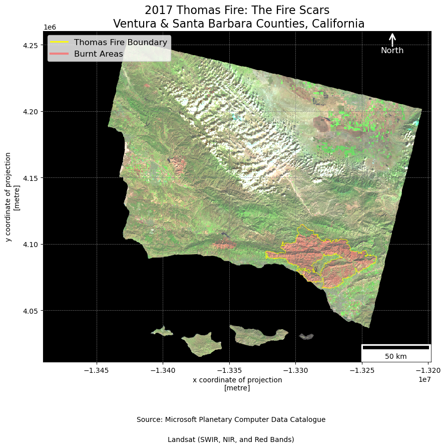
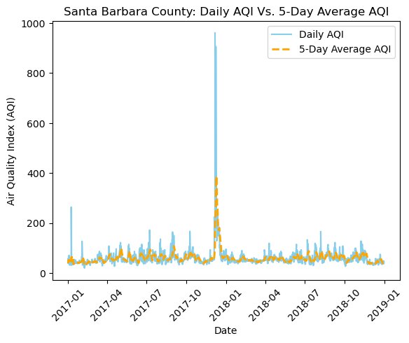

# Import libraries
import os
import pandas as pd
import matplotlib.pyplot as plt
from matplotlib.lines import Line2D
from matplotlib_scalebar.scalebar import ScaleBar
from matplotlib.patches import FancyArrowPatch
import geopandas as gpd
import rioxarray as rioxr
# Import ignore warnings
import warnings
warnings.filterwarnings("ignore")Datasets Description
Background
According to the LA Times, the 2017 Thomas Fire was one of the most destructive wildfires in California’s history, both in terms of size and impact.The fire burned over 440 square miles, making it the second-largest wildfire in California’s recorded history. Its devastating effects included two confirmed deaths, over 1,000 structures destroyed, and tens of thousands of residents forced to evacuate.
The Thomas Fire ignited in early December 2017 and, driven by strong winds and dry conditions, rapidly spread across Ventura and Santa Barbara counties, areas of diverse and ecologically sensitive landscape, including urban areas, agricultural land, and rugged wilderness.
Additionally, the social impact of the Thomas Fire was significant, affecting thousands of individuals and families. Beyond the loss of homes and property, the fire disrupted communities, schools, and businesses, and led to long-term challenges related to recovery and rebuilding.
This project assesses the effects of the Thomas Fire through a geographic lens, considering both the spatial distribution of the fire and environmental parameters such as air quality. By analyzing these geographic factors, we can better understand how the fire spread and the compounded impact on human health
Purpose:
This analysis demonstrates how remote sensing data and air quality index (AQI) data can be processed and visualized using Python for environmental assessments. Specifically, this work focuses on analyzing the impact of the Thomas Fire of 2017 in California. By leveraging satellite imagery from Landsat satellites and historical AQI data.
Highlights:
Landsat False Color Imaging: The notebook demonstrates the creation of a false color composite using Landsat 8 bands (SWIR22, NIR08, and Red) to highlight fire scars and assess burn severity.
Landsat Cloud Handling: The notebook applies a robust scaling to reduce the impact of outliers (such as cloud cover).
Fire Impact Map: By creating visualizations, it is possible to identify areas severely impacted by the fire, including vegetation loss and changes in landscape.
AQI Time-Based Analysis: A 5-day rolling average was used to smooth out short-term fluctuations and highlight long-term trends in air quality.
AQI Graph: The AQI trends before, during, and after the fire were visualized to assess how air quality worsened due to smoke and particulate matter from the wildfire. Peaks in the AQI were correlated with the fire’s progression, showing the worst air quality during and immediately after the fire.
About the Data:
The Landsat 8 satellite imagery was sourced from the Microsoft Planetary Computer Data Catalogue. The images provide high-resolution, multispectral data used for detecting changes in vegetation.
The Thomas Fire Perimeter provides the boundaries of the area affected by the fire, this shapefile covers the counties in Ventura and Santa Barbara, California.
The historical AQI data can provide insights into how air quality was affected in the region of Santa Barbara and Ventura counties. AQI measurements are key indicators of air pollution, which will help assess the short- and long-term impact of the fire on public health and the environment in these areas.
References:
Microsoft. (2024). Landsat Collection 2 Level-2. Microsoft Planetary Computer Data Catalogue. Retrieved November 14, from https://planetarycomputer.microsoft.com/dataset/landsat-c2-l2
Data.gov. (2024). California fire perimeters (all). CAL FIRE. Retrieved November 14, 2024, from https://catalog.data.gov/dataset/california-fire-perimeters-all-b3436
U.S. Environmental Protection Agency (EPA). (2017-2018). Air Quality Index (AQI). Air Now. Retrieved October 22, 2024, from https://www.epa.gov/outdoor-air-quality-data
Load Libraries and Datasets for Analysis
# Define the file paths
landsat_fp = 'data/landsat8-2018-01-26-sb-simplified.nc'
shapefile_fp = os.path.join('data', 'thomas_fire_2017_boundary.shp')
perimeter_fp=os.path.join('data', 'California_Fire_Perimeters_(all).shp')
# Read the raster data using rioxarray
landsat = rioxr.open_rasterio(landsat_fp)
# Read the shapefile using geopandas
fire_perimeter=gpd.read_file(perimeter_fp)
# Convert projection
landsat = landsat.rio.reproject(fire_perimeter.crs)
# Read CSV files
aqi_17 = pd.read_csv('data/daily_aqi_by_county_2017.zip',compression='zip')
aqi_18 = pd.read_csv('data/daily_aqi_by_county_2018.zip',compression='zip')
# Concatenate DataFrames aqi_17 and aqi_18 along the default axis
aqi = pd.concat([aqi_17, aqi_18])Data Exploration & Data Wrangling
California Fire Perimeters Datasets
# Print fire_perimeter projection
print(f"{'The CRS of fire_perimeter is:':} {fire_perimeter.crs}")
# Display the first few rows of the DataFrame to get an overview of the data
fire_perimeter.head(3)The CRS of fire_perimeter is: EPSG:3857| YEAR_ | STATE | AGENCY | UNIT_ID | FIRE_NAME | INC_NUM | ALARM_DATE | CONT_DATE | CAUSE | C_METHOD | OBJECTIVE | GIS_ACRES | COMMENTS | COMPLEX_NA | IRWINID | FIRE_NUM | COMPLEX_ID | DECADES | geometry | |
|---|---|---|---|---|---|---|---|---|---|---|---|---|---|---|---|---|---|---|---|
| 0 | 2023 | CA | CDF | SKU | WHITWORTH | 00004808 | 2023-06-17 | 2023-06-17 | 5 | 1 | 1 | 5.72913 | None | None | {7985848C-0AC2-4BA4-8F0E-29F778652E61} | None | None | 2020 | POLYGON ((-13682443 5091132.739, -13682445.825... |
| 1 | 2023 | CA | LRA | BTU | KAISER | 00010225 | 2023-06-02 | 2023-06-02 | 5 | 1 | 1 | 13.60240 | None | None | {43EBCC88-B3AC-48EB-8EF5-417FE0939CCF} | None | None | 2020 | POLYGON ((-13576727.142 4841226.161, -13576726... |
| 2 | 2023 | CA | CDF | AEU | JACKSON | 00017640 | 2023-07-01 | 2023-07-02 | 2 | 1 | 1 | 27.81450 | None | None | {B64E1355-BF1D-441A-95D0-BC1FBB93483B} | None | None | 2020 | POLYGON ((-13459243 4621236, -13458968 4621453... |
The overview of the fire perimeter dataset reveals that the column names need to be cleaned. The dataset contains historical data on all fires in California. To narrow our focus to the area of interest, we will filter the dataset to include only the Thomas Fire event, which occurred in 2017, for further analysis.
# Replace spaces with underscores and convert to lowercase
fire_perimeter.columns = fire_perimeter.columns.str.rstrip().str.replace(' ', '_').str.lower()
# Replace the column name 'year' explicitly to avoid '_'
fire_perimeter.columns = fire_perimeter.columns.str.replace(r'year_', 'year')# Filter the fire perimeter for the 2017 Thomas Fire
thomas_fire = fire_perimeter[(fire_perimeter['fire_name'] == 'THOMAS') & (fire_perimeter['year'] == 2017)]Landsat Imagery Dataset
# Display the head() of the dataframe to get an overview of the data
landsat.head()<xarray.Dataset> Size: 1kB
Dimensions: (x: 5, y: 5, band: 1)
Coordinates:
* x (x) float64 40B -1.349e+07 -1.349e+07 ... -1.349e+07 -1.349e+07
* y (y) float64 40B 4.26e+06 4.26e+06 4.259e+06 4.259e+06 4.259e+06
* band (band) int64 8B 1
spatial_ref int64 8B 0
Data variables:
red (band, y, x) float64 200B 0.0 0.0 0.0 0.0 ... 0.0 0.0 0.0 0.0
green (band, y, x) float64 200B 0.0 0.0 0.0 0.0 ... 0.0 0.0 0.0 0.0
blue (band, y, x) float64 200B 0.0 0.0 0.0 0.0 ... 0.0 0.0 0.0 0.0
nir08 (band, y, x) float64 200B 0.0 0.0 0.0 0.0 ... 0.0 0.0 0.0 0.0
swir22 (band, y, x) float64 200B 0.0 0.0 0.0 0.0 ... 0.0 0.0 0.0 0.0Based on the preview above, we observe under the indexes catergory that the dataset is 3-dimensional. The third dimension (representing multiple bands) is not needed for our analysis, so we will remove it to simplify the dataset.
# Remove length 1 dimension (band)
landsat = landsat.squeeze()
# Remove coordinates associated to band
landsat = landsat.drop('band')Air Quality Index (AQI)
# Display the head() of the dataframe to get an overview of the data
aqi.head()| State Name | county Name | State Code | County Code | Date | AQI | Category | Defining Parameter | Defining Site | Number of Sites Reporting | |
|---|---|---|---|---|---|---|---|---|---|---|
| 0 | Alabama | Baldwin | 1 | 3 | 2017-01-01 | 28 | Good | PM2.5 | 01-003-0010 | 1 |
| 1 | Alabama | Baldwin | 1 | 3 | 2017-01-04 | 29 | Good | PM2.5 | 01-003-0010 | 1 |
| 2 | Alabama | Baldwin | 1 | 3 | 2017-01-10 | 25 | Good | PM2.5 | 01-003-0010 | 1 |
| 3 | Alabama | Baldwin | 1 | 3 | 2017-01-13 | 40 | Good | PM2.5 | 01-003-0010 | 1 |
| 4 | Alabama | Baldwin | 1 | 3 | 2017-01-16 | 22 | Good | PM2.5 | 01-003-0010 | 1 |
To work with a more simplified dataset, the column names were renamed by converting them to lowercase and replacing spaces with underscores, ensuring consistency and improving ease of manipulation for further analysis. Additionally, we will need to filter the aqi DataFrame to include only rows where the county_name is ‘Santa Barbara’. We then drop unnecessary columns (state_name, county_name, state_code, and county_code) to streamline the dataset. The date column is converted to a datetime format and set as the index for easier time-based analysis. Lastly, a 5-day rolling average of the AQI values is calculated and added to the DataFrame as a new column, five_day_average, which smooths out fluctuations in the AQI data over time.
# Simplify column names
aqi.columns = (aqi.columns
.str.lower()
.str.replace(' ','_')
)
# Filter to include only the rows where the county name is 'Santa Barbara' & 'Ventura"
aqi_sb = aqi[(aqi['county_name'] == 'Santa Barbara') | (aqi['county_name'] == 'Ventura')]
# Drop unnecessary columns('state_name', 'county_name', 'state_code', and 'county_code')
aqi_sb = aqi_sb.drop(['state_name', 'county_name', 'state_code', 'county_code'], axis=1)# Check data type of each column
print("Data Types: ", aqi.dtypes)Data Types: state_name object
county_name object
state_code int64
county_code int64
date object
aqi int64
category object
defining_parameter object
defining_site object
number_of_sites_reporting int64
dtype: objectWhen inspecting the data types of each column, we observed that the date column was of type Object. To properly work with time-series data and perform operations, we need to convert the date column to a datetime type in order to perform a 5-day rolling average.
# Convert 'date' column in the aqi_sb DataFrame to datetime format
aqi_sb.date = pd.to_datetime(aqi_sb['date'])
# Set the 'date' column as the index and sort by index
aqi_sb = aqi_sb.set_index('date').sort_index()
# Calculate AQI rolling average over 5 days
aqi_sb['five_day_average'] = aqi_sb['aqi'].rolling('5D').mean()Data Exploration Summary
This preliminary exploration assessed the California fire perimeters and the Landsat 8 satellite imagery. The findings are as followed:
1. Fire Perimeter
Data Structure: The dataset consists of 17 columns, with information such as fire year (year), state, agency, etc.
Coordinate Reference System (CRS): The dataset uses the EPSG:3857 coordinate reference system (CRS), which is a projected coordinate system.
Data Preprocessing: The column names were cleaned to replace spaces with underscores and convert them to lowercase for easier processing and consistency, (for example: YEAR_ was changed to year). Filtered the dataset to include only the Thomas Fire event.
2. Landsat 8 satellite
Variables in the Dataset: The dataset contains several variables related to different spectral bands from the Landsat 8 satellite, stored as xarray.DataArray objects. These include: - Red (float64) - Green (float64) - Blue (float64) - Near Infrared (NIR08) (float64) - Shortwave Infrared (SWIR 22) (float64)
Coordinate reference system (CRS): The dataset uses the EPSG:32611, this is a projected coordinate reference system.
Data Preprocessing:: The indexes contains y, x and band. We noticed that our raster has an unnecessary extra dimension band. This dimension was removed.
3. Air Quality Index
Data Structure: The dataset includes several columns representing air quality measurements, including aqi, date, county_name, state_name, etc. The dataset provides daily AQI values for different counties in California.
Column Names: The column names were cleaned to replace spaces with underscores and converted to lowercase for consistency and ease of processing.
Data Preprocessing: the dataset was filtered to include only the rows where the county_name was ‘Santa Barbara’ and ‘Ventura’, focusing the affected area of the Thomas Fire. A 5-day rolling average of the AQI values was calculated and added as a new column, five_day_average, which smoothed out the short-term fluctuations.
Visualizing the Impacts of the Thomas Fire
Remote Sensing Analysis: Assessing the Fire Impact
# Create a figure and axis
fig, ax = plt.subplots(figsize = (10, 10))
# Plot the false color image (SWIR, NIR, Red bands)
landsat[['swir22', 'nir08', 'red']].to_array().plot.imshow(ax = ax, robust=True)
# Plot the Thomas Fire boundary
thomas_fire.boundary.plot(ax = ax, edgecolor='yellow', linewidth=0.5, label="Thomas Fire Boundary")
# Add title
ax.set_title("2017 Thomas Fire: The Fire Scars\n Ventura & Santa Barbara Counties, California", fontsize=16)
# Create custom legend entries for both boundary and burnt areas
legend_elements = [
Line2D([0], [0], color='yellow', lw=2, label='Thomas Fire Boundary'),
Line2D([0], [0], color='lightcoral', lw=3, label='Burnt Areas')
]
# Add the custom legend to the map
ax.legend(handles=legend_elements, loc='upper left', fontsize=12)
# Add a Scale Bar
scalebar = ScaleBar(1, location='lower right')
ax.add_artist(scalebar)
# Add North Arrow
arrow = FancyArrowPatch(
(0.9, 0.95), (0.9, 1),
mutation_scale=20,
color='white',
lw=2,
arrowstyle='->',
label='North',
transform=ax.transAxes
)
ax.add_patch(arrow)
# Add a label for "North"
ax.text(0.9, 0.93, 'North', color='white', fontsize=12, ha='center', va='bottom', transform=ax.transAxes)
# Add grids
ax.grid(True, which='both', color='gray', linestyle='--', linewidth=0.5)
# Add captions
fig.text(0.5, 0.05, 'Source: Microsoft Planetary Computer Data Catalogue', ha='center', va='center', fontsize=10, color='black')
fig.text(0.5, 0.01, 'Landsat (SWIR, NIR, and Red Bands)', ha='center', va='center', fontsize=10, color='black')
# Display the map
plt.show()
To show the impact of the 2017 Thomas Fire, the false color composite of the Landsat 8 satellite imagery was processed. The composite is created by combining the shortwave infrared (SWIR), near-infrared (NIR), and red spectral bands.
Vegetation appears in shades of green and burned areas are highlighted in a light red tone. The Thomas Fire perimeter, shown in a yellow line, indicates the boundaries of the fire. This boundary helps to highlight the areas affected by the fire and offers insight into the extent of the damage.
The use of a false color composite is particularly effective for distinguishing burned areas and vegetation, making it a valuable tool for post-fire analysis and monitoring vegetation recovery.
Time-Series Analysis
# Plot the daily AQI
plt.plot(aqi_sb.index, aqi_sb['aqi'], label='Daily AQI', color='skyblue', linestyle='-')
# Plot the 5-day average AQI
plt.plot(aqi_sb.index, aqi_sb['five_day_average'], label='5-Day Average AQI', color='orange', linestyle='--', linewidth=2)
# Add titles, labels and legend
plt.title('Santa Barbara County: Daily AQI Vs. 5-Day Average AQI')
plt.xlabel('Date')
plt.ylabel('Air Quality Index (AQI)')
plt.legend()
# Rotate x-labels at a 45 angle in order to fit in graph
plt.xticks(rotation=45)
# Show plot
plt.show()
The ‘Daily AQI Vs. 5-Day Average AQI’ plot demonstrates the air quality from 2017-2018. It is clear that the Thomas Fire event had a major impact on the AQI, we can observe a major spike on the graph, indicating deteriorated air quality due to increased particulate matter in the air.
Github Repository:
For full access to the data, analysis code, and visualizations, please visit the GitHub repository:
https://github.com/kpaya/EDS220-Final-Project